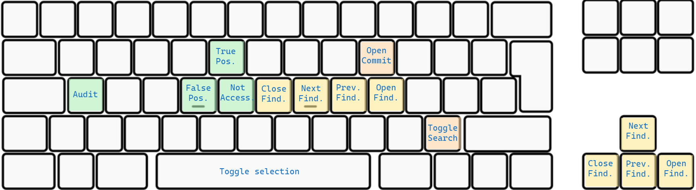

Table of contents
About the project
The Repository Scanner (RESC) is a tool used to detect secrets in source code management and version control systems (e.g. GitHub, BitBucket, or Azure DevOps). Among the types of secrets that the Repository Scanner detects are credentials, passwords, tokens, API keys, and certificates. The tool is maintained and updated by the ABN AMRO Bank to match the constantly changing cyber security landscape.
The Repository Scanner was created to prevent that credentials and other sensitive information are left unprotected in code repositories. Exposing sensitive information in such a way can have severe consequences for the security posture of an organization. An attacker can use the data to compromise the organization's network. This can be prevented by scanning a repository with the RESC tool. It marks all the instances of exposed sensitive information in the source code.

🔗 Links
Throughout the process of open sourcing this project, the ABN AMRO Bank created a series of articles that describe the capabilities of the Repository Scanner (RESC) tool, the architectural decisions behind it, and the road to open sourcing RESC. With the articles, users can look "behind the scenes" and gain a deeper understanding of the tool.
- ABN AMRO Open Source project: Repository Scanner
- Source Project Update: Repository Scanner
- Source Project Update: Repository Scanner 2.0.0
🏁 Getting started
Please refer resc-helm-wizard for an interactive and easy way to deploy RESC on a Kubernetes cluster.
Thee following instructions will help you to downlaod and install the helm chart on your machine for development and testing purposes.
Prerequisites
1. Install Software
- Docker Desktop
- Kubernetes - To install Kubernetes, enable it in Docker Desktop. If you install Kubernetes using minikube, ensure the version is 1.21 or later.
- Helm
2. Populate RESC-RULE.toml file
- Ensure you have the rule pack config file in TOML format available, which needs to be provided as
deployment argument.
To download this GitLeaks rule you need to execute the following command.
curl https://raw.githubusercontent.com/zricethezav/gitleaks/master/config/gitleaks.toml > RESC-RULE.toml
3. Populate custom-values.yaml file
Run the interactive CLI wizard to populate custom-values.yaml. Detailed information can be found here
4. Ensure the resc namespace is created, if not then run
kubectl create namespace resc
Deploying charts
Make sure you have completed the pre-requisite steps.
- Add the chart repository
helm repo add [NAME] [URL]
helm repo add resc-helm-repo https://abnamro.github.io/repository-scanner/
- (Optional): If the repo was already added earlier, you can run the following command to retrieve the latest versions of the packages.
helm repo update
- To ensure this went well, you can execute the following command to see the charts.
helm search repo resc-helm-repo - To install with the release name, run the following command.
helm install --namespace resc resc-release resc-helm-repo/resc -f <custom-values.yaml file location> --set-file global.secretScanRulePackConfig=<RESC-RULE.toml file location>
- At any point if you wish to uninstall the chart.
helm delete resc-release --namespace resc
Note: resc-release corresponds to the release name, feel free to change it to suit your needs.
Additional Information
For additional information please refer this page
🏎️ Key bindings
RESC comes with the following keybindings:
💁🏽 Contributing guidelines
We believe that innovating together can lead to the most incredible results and developments. Contributions to the Repository Scanner tool are therefore highly encouraged. We have created guidelines that we expect contributors to the project to follow. By contributing to the project you also agree with our Code of Conduct.
📧 Contact
If you need to get in touch with the maintainers of the Repository Scanner tool, please use the following e-mail address: resc@nl.abnamro.com.
⚖️ License
The Repository Scanner (RESC) Tool is licensed under the MIT License.
🎉 Acknowledgements
Since the Repository Scanner (RESC) makes use of GitLeaks, we want to give Zachary Rice credits for creating and maintaining GitLeaks. GitLeaks has helped many organizations in securing their codebases for any leaked secrets.